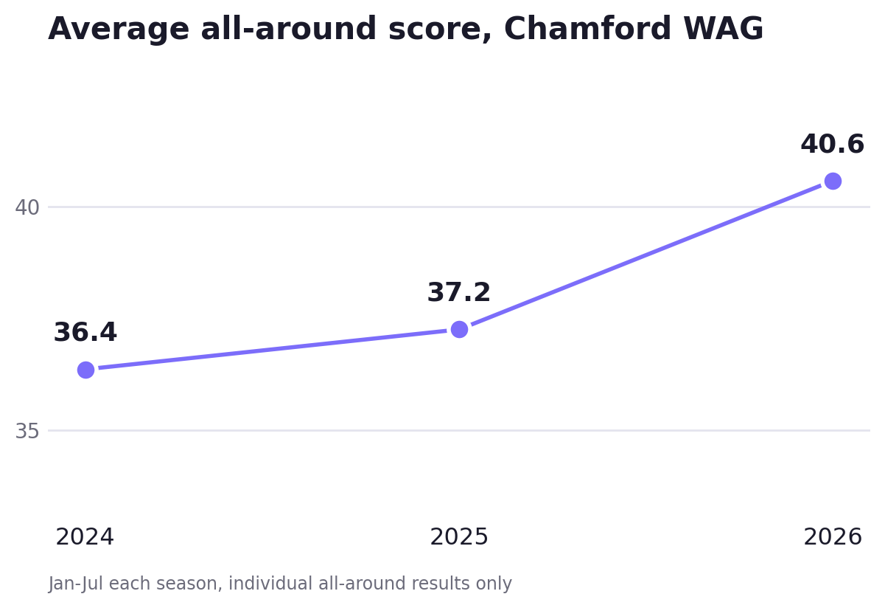

Last time, I profiled Eureka Gymnastics, a regional club that closed once and moved twice on its way to where it is now. Chamford Gymnastics Club is close to the opposite story: a Murrumbeena club that's been teaching gymnastics in the same suburb since 1982 and runs today out of 34/993 North Rd, forty-four years without leaving the area in a series where that's been the exception rather than the rule.
Forty-four years in Murrumbeena
Per the club's own history, Chamford was established near Murrumbeena in 1982 to give local kids "carefully planned classes that encourage each child to learn at their own pace," and it still frames its mission the same way today, alongside a stated goal of helping "each child achieve and be the best they can be." The club now runs programs across the full age range, toddlers through adults, spanning Junior Gymnastics, Recreational Gymnastics, Gymstar, and a dedicated WAG Squad, plus school holiday and school group programs.
What the numbers say

Fifty-two WAG athletes appear in my database for Chamford, with 341 individual results across 31 competitions spanning the 2024, 2025, and 2026 seasons. At Level 8 and above, the club has accumulated 19 medals: 9 gold, 5 silver, and 5 bronze. Beam is Chamford's strongest apparatus relative to the field, which is fitting given what we'll get to further down, with vault the clearest room for growth. The club's average individual all-around score has also risen every season on a fair like-for-like comparison, from 36.4 in the first seven months of 2024 to 37.2 over the same window in 2025 to 40.6 this year. With only a few dozen results in each window, that trend might just be a quirk of the data, but I thought it was an interesting stat to mention nonetheless. It's also come with more golds (2 to 5 to 7) and more podiums (8 to 14 to 16) across the same three windows: fewer entries producing better results, not more of the same.
Estelle Warnes and Lexi Thomas: five for five, and four seconds
Estelle Warnes has had one of the best seasons of any athlete in this series so far. Moving up to Level 9 Division 1 in 2026 after winning the Level 8 Division 1 title at last year's Senior VIC Championships, she has won every single one of her five Division 1 starts this year: the Knox Senior WAG Invitational, the BTYC Extravaganza, WAG Trial 1 and Border Challenge Trial 1, the Waverley Invite with a season-best 50.8, and this year's Senior Victorian Championships with 49.633 in a 26-athlete field. Five starts, five wins, two of them across the state's biggest Division 1 fields.
Lexi Thomas has been the steady second name behind her all year. In our database, which only tracks Victorian competitions, she spent most of 2025 at Level 7 before a late-season move to Level 8, then stepped up again to Level 9 in 2026: 2nd at Knox, 2nd at BTYC, 3rd at WAG Trial 1, 5th at the Waverley Invite, 2nd at Senior Vics, a runner-up finish in three of her five Division 1 starts. That domestic consistency is exactly what made her Australian Championships result in June worth watching. Competing at her first Nationals, Lexi won national silver on beam, finishing 6th all-around, 4th on floor, and 6th on bars, a genuinely elite result for a program this size. Estelle backed it up with her own strong Nationals week, 4th all-around, 4th on vault, 5th on bars, 5th on beam, and 7th on floor, sitting 3rd overall after day one.
That form has been rewarded beyond the competition floor. Both athletes have been selected for the AIS International Pathways Green Camp, a four-day program at the Australian Institute of Sport in August, training alongside other athletes, leading coaches, and high performance staff. For a suburban club this size to have two athletes on that camp in the same year is a real result, and it lines up with everything the state-level numbers already show.